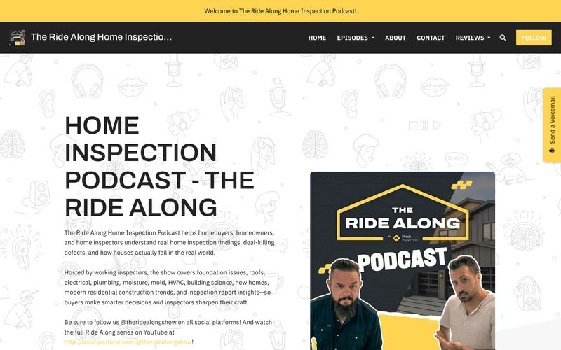
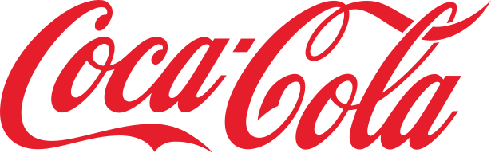
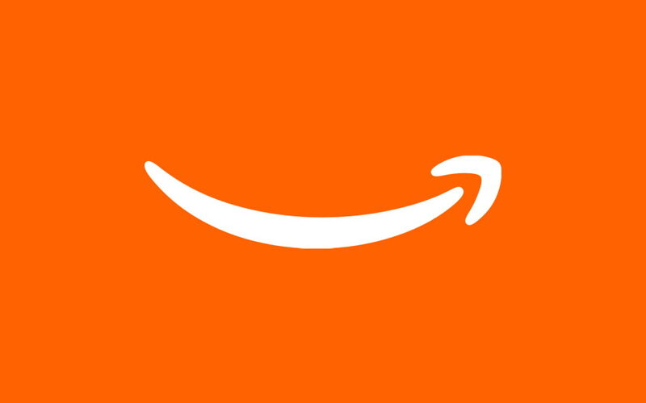
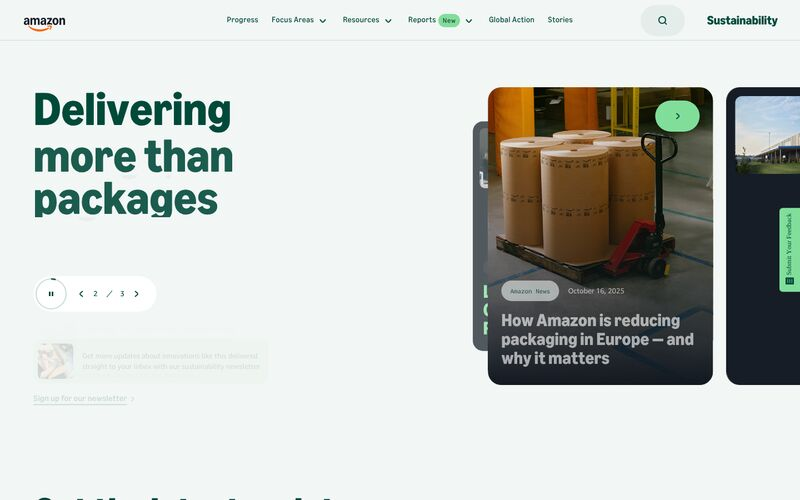
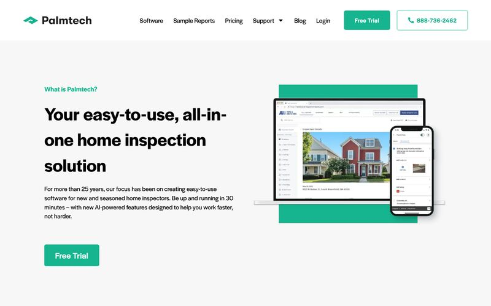
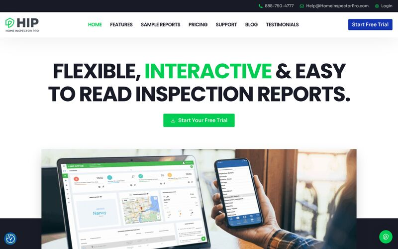
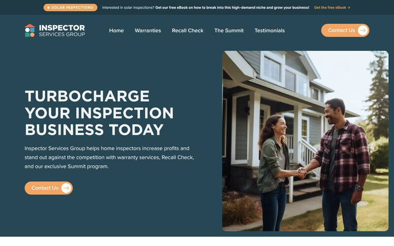

Porch Group
The Ride Along
Launched and grew the largest media property and podcast in the property inspection industry, from 500 to 16,000+ subscribers in under two years.
See moreBrand strategy and marketing leadership
15+ years building brands, narratives, and content engines across three Fortune 100 companies and two startups. Laser-focused on strategy, lighthearted on the rest.
Experience at

I am a brand strategy executive with 15+ years leading narrative, creative, and content systems for technical and developer-first audiences. I built first-of-their-kind editorial platforms at Coca-Cola and Amazon that became trusted brand narrative engines, and led go-to-market for the AWS startup segment across 27 countries.
I translate complex product innovation into clear, audience-authentic storytelling, and build creative production systems that scale without sacrificing craft. I own P&Ls, build multidisciplinary teams, and put the content operations and measurement in place to prove impact. Today I lead marketing for the Inspection business at Porch Group.

Porch Group
Launched and grew the largest media property and podcast in the property inspection industry, from 500 to 16,000+ subscribers in under two years.
See moreAWS
Launched three integrated campaigns across 27 countries in 11 months, generating $3M+ in qualified pipeline from a $300K media investment.

Amazon
Launched the Day One blog, the About Amazon corporate site, and the Out for Delivery email program across seven markets. Day One drew 1.5M+ unique monthly visitors.
See moreCoca-Cola
Reimagined the corporate website as an editorial platform, syndicated to 30+ international markets, that drove a $6M investment in original storytelling.
See more
Amazon
Led strategy, development, and launch of the first sustainability-focused web experiences Amazon ever launched, across the US, UK, Germany, Spain, France, and Italy.
See more
Porch Group
Led the rebrand of Palmtech, easy-to-use home inspection software that has served new and seasoned inspectors for more than 25 years.
See more
Porch Group
Led the rebrand of Home Inspector Pro, customizable home inspection software for Windows, Mac, iOS, and Android.
See more
Porch Group
Led the rebrand of Inspector Services Group, which helps home inspectors grow with warranty services, Recall Check, and the Summit program.
See moreLead marketing and PR for a division serving 33,000+ home inspection companies, with full P&L and a team of nine. Grew revenue pipeline 75% year over year on a flat $2.5M budget and led five brand overhauls in under three years.
Built the brand and go-to-market for a SaaS CRM and payments platform for pet services providers, through an investment round, MVP, and strong product-market fit, before the 2022 venture downturn closed off further funding.
First digital marketing leader for the AWS startup segment. Generated $3M+ in qualified pipeline at a 10:1 pipeline-to-spend ratio and managed a team of three in a highly matrixed global organization.
Launched the Day One blog, About Amazon, Out for Delivery, and Sustainability at Amazon. Managed a $10M+ paid media budget, a multidisciplinary team of seven, and the first purpose-built editorial analytics.
Chief spokesperson and first head of communications, leading media and analyst relations globally and all communications for the $50M Series D. Managed a team of three and an agency team of nine.
Built a $9M P&L and a team of 59 strategists across Austin, New York, and London. Developed six new strategy products in nine months and drove 300% year-over-year revenue growth.
Built the first social media and content marketing team at a Fortune 100 brand and launched the award-winning Coca-Cola Journey.
Microsoft, The Corkery Group (now M Booth Health), and Porter Novelli.
The LGBTQ+ Victory Fund
Saving Great Animals Pet Rescue
Languages
French (intermediate), German (conversational), and Italian (beginner).
Work authorization
EU work authorization, no sponsorship required.
Lived abroad
France and South Africa.
Travel
Every inhabited continent, all 50 states, plus Washington, D.C., and Puerto Rico.
Off the clock
I build model ships and planes. Patience, it turns out, is a transferable skill.
If you are building a marketing function, or rebuilding one, I would like to hear about it.
ashley@gusandbrown.com